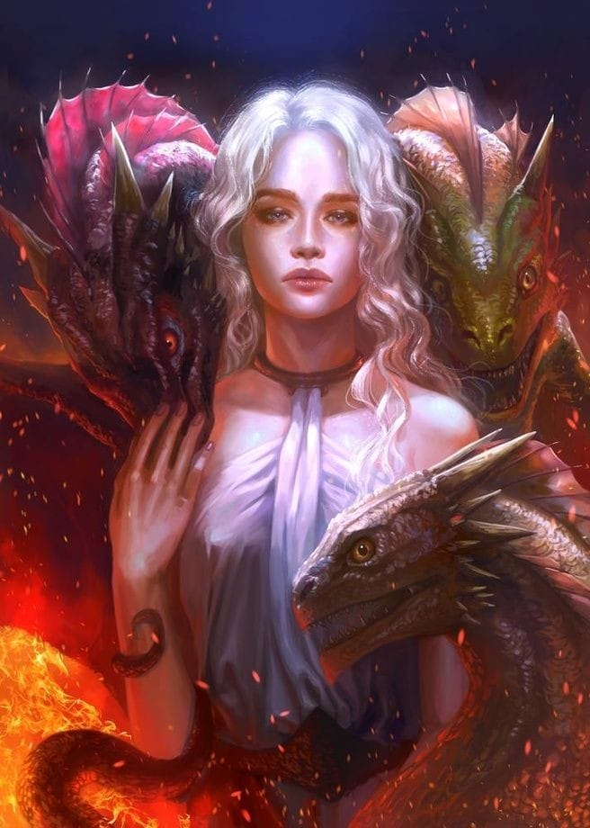

Jon snow
jon Snow é o filho bastardo de Lorde Eddard Stark com uma mãe cuja identidade não é conhecida. Jon foi criado por seu pai ao lado dos seus meio-irmãos Robb, Sansa, Arya, Bran e Rickon Stark, mas juntou-se à Patrulha da Noite quando atingiu a idade adulta. É constantemente acompanhado por seu lobo albino Fantasma. Ele foi apelidado de Lorde Snow por Sor Alliser Thorne para humilhá-lo, mas sem saber que no futuro ele realmente seria o Senhor Comandante da Patrulha da Noite. Na série de televisão é interpretado pelo ator Kit Harington.
Ainda com quatorze anos, é dito que Jon tem mais características Stark do que seus meio-irmãos, exceto Arya Stark, que herdou as mesmas características. Jon se parece muito com Lorde Eddard Stark, inclusive tem o formato do rosto do pai:longo,comprido, solene e reservado que nada revelava; com cabelos castanhos escuros e olhos cinzentos mais escuros, quase negros, que pouco havia que não vissem.

Daenerys targaryen
Daenerys Targaryen, também chamada Daenerys Nascida da Tormenta ou Dany, é a última remanescente confirmada da Casa Targaryen e uma das principais personagens PDV nos livros. Na série de televisão é interpretada pela atriz Emilia Clarke.
Ela é uma jovem adolescente. É baixa e muito bonita, com cabelos loiro-platinados e olhos violeta, comuns aos membros da Casa Targaryen.
Em sua infância, Dany era uma garota tímida e dócil, com pouca confiança e auto-estima. Ela não conheceu outra vida além da que teve no exílio, dependente de seu irmão, Viserys Targaryen, que a amedrontava. Ele era a única família que ela conhecia, mas foi um guardião cruel, propenso a mudanças de humor e surtos de violência.

Bran Stark
Brandon Stark comumente chamado de Bran, é o segundo filho de Eddard Stark e Catelyn Tully. No início do livro A Guerra dos Tronos, Bran tem sete anos de idade. Ele tem um irmão mais velho, Robb e um mais novo, Rickon. Ele também tem duas irmãs mais velhas, Sansa e Arya, e um meio-irmão bastardo, Jon Snow.
Bran é um dos principais personagens dos livros, não figurando como Personagem de ponto de vista apenas no livro O Festim dos Corvos, devido a separação geográfica dos personagens feita pelo autor. Ele está quase sempre acompanhado pelo seu lobo gigante, Verão, com quem compartilha uma peculiar relação warg. O primeiro capítulo da saga de As Crônicas de Gelo e Fogo é de Bran.
Bran herdou os traços de sua mãe, tendo o cabelo castanho avermelhado espesso e olhos azuis profundos dos Tully.Bran é um menino doce e atencioso, e amado por todos em Winterfell. Ele tem um fascínio pela escalada e gosta de explorar ao longo das paredes das muralhas do castelo. Senhora Catelyn uma vez brincou que Bran "aprendeu a escalar antes de andar". No entanto, sua escalada muitas vezes a preocupa.
Isaac Hempstead-Wright como Bran Stark na 1ª temporada da série de TV.
Assim como seus irmãos, ele possui uma propensão para a aventura e emoção. Seu meio-irmão Jon carinhosamente pensa que Bran sempre foi "teimoso e curioso", e que ele constantemente queria participar do jogo dos meninos mais velhos, acreditando ser um adulto de sete anos. No entanto, ele se torna mais sério e contemplativo, devido à sua situação depois de sua queda. Bran é um Troca-peles e warg, assim como alguns de seus irmãos. Mais tarde é revelado também que ele é também um vidente verde.

Arya Stark
Arya Stark é a terceira filha de Lorde Eddard Stark e Catelyn Stark. No início do livro A Guerra dos Tronos, Arya tem nove anos de idade. Ela tem um irmão mais velho, Robb e dois irmãos mais novos, Bran e Rickon. Ela também tem uma irmã mais velha, Sansa, e um meio-irmão bastardo, Jon Snow.
Assim como alguns de seus irmãos, ela é uma Troca-peles. Seu lobo gigante se chama Nymeria, uma referência a uma rainha guerreira Roinar. Arya é a única personagem a ter pelo menos um capítulo PDV em cada um dos seis livros. Na série de TV é interpretada por Maisie Williams.
Arya é uma menina animada interessada em combate e exploração, ao contrário de sua irmã mais velha, Sansa. Arya deseja aprender a lutar com espadas e participar de torneios, para o horror de Sansa, que gosta das atividades mais tradicionais de uma nobre. Arya é muito próxima de seu meio-irmão Jon Snow, que a incentiva. Jon Snow dá a Arya sua primeira espada, Agulha, como um presente. Ao longo de suas viagens, Arya mostra grande desenvoltura, astúcia e uma capacidade firme de aceitar duras necessidades.
Arya se parece mais com os Stark do que com os Tully, com um rosto comprido, olhos cinzentos e cabelos castanhos. Ela é magra e atlética. No início da história, ela é geralmente considerada normal, como exemplificado pelo apelido de "Arya Cara de Cavalo", e muitas vezes confundida com um menino. No entanto, há casos em que se compara a beleza dela a de Lyanna, e ela mais tarde começa a chamar atenção de homens.
Ela é canhota, rápida e habilidosa. Ela aprendeu esgrima básica no estilo Dança da Água bravosiana e mais tarde aprendeu a lidar com facas. Ela é uma Troca-peles, entrando em sua loba gigante Nymeria em seus sonhos, assim como gatos em Bravos. Ela recebeu uma educação nobre em Winterfell, é boa em matemática e excelente amazona. Ela provou saber pelo menos um pouco de valiriano. Ela também fala bravosi com um sotaque forte e se esforçou em aprender a língua, sob ordens do Homem Bondoso. Ela tem uma mente rápida e curiosa, e uma visão pragmática.

Tyrion Lannister
Tyrion Lannister é o terceiro e mais novo filho de Tywin Lannister e Joanna Lannister. Tyrion é um anão, e por causa disso é chamado, zombeteiramente, às vezes, de Duende e Meio Homem. Seu emblema pessoal é uma mão dourada rodeada de leões dourados em um fundo vermelho. Ele é um dos principais Personagens PDV dos livros. Na série de TV, Tyrion é interpretado por Peter Dinklage.
Tyrion é educado, culto, calculista e perspicaz, mas recebe pouco respeito de seu pai por tais qualidades, por causa de sua deformidade, e pela morte de sua mãe durante seu parto. Tyrion é cruel com seus inimigos, mas possui grande simpatia para com os párias e as minorias. Tyrion se dá bem com seu irmão Jaime, mas possui uma relação mais fria com sua irmã Cersei. A deformidade de Tyrion foi a causa de muitos problemas e perseguições, embora diminuídas até certo ponto por sua alta posição social e pela riqueza e poder de sua família.
É um anão, com pernas atrofiadas, uma cabeça grande demais para seu corpo e uma cara animalesca esborrachada por baixo de sobrancelhas salientes. Além disso, possui um olho verde e outro negro, e cabelos escorridos tão loiros que parecem brancos. Mais tarde, ele deixa sua barba crescer, um hirsuto emaranhado de pelos amarelos e negros, duros como arame. Após a Batalha da Água Negra, Tyrion ganhou uma cicatriz facial que removeu a maior parte de seu nariz.
Desenvolveu, desde pequeno, o gosto e hábito pela leitura, pois acreditava, que devido suas limitações físicas, sua mente deveria ser sua arma. Sabia que sua cabeça era grande demais, embora preferisse pensar que tinha o tamanho certo para a sua mente. Sentia, inclusive, um mórbido fascínio por dragões.